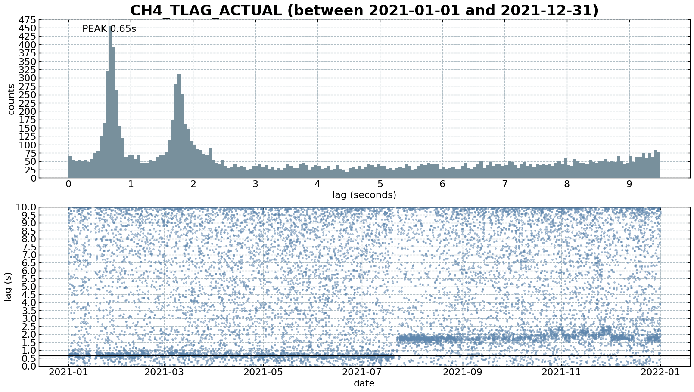
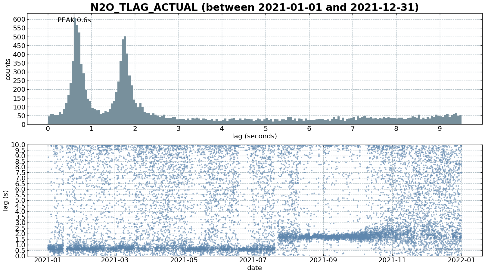
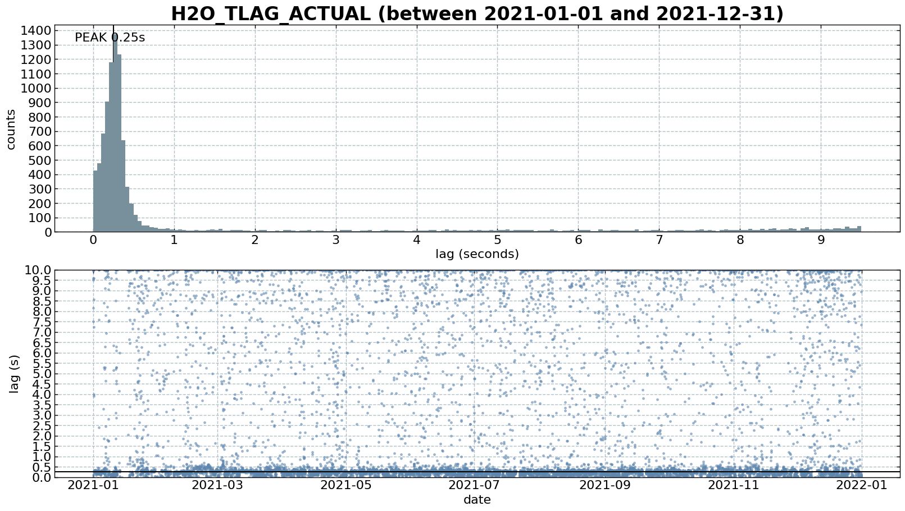

Time lag check on Level-0 fluxes#
import matplotlib.gridspec as gridspec
import matplotlib.pyplot as plt
import matplotlib.transforms as transforms
import pandas as pd
from diive.core.plotting.plotfuncs import default_format
from diive.pkgs.analyses.histogram import Histogram
from diive.core.io.files import load_parquet
# pd.options.display.width = None
# pd.options.display.max_columns = None
pd.set_option('display.max_rows', 50)
pd.set_option('display.max_columns', 50)
# Source folders parquet
SOURCEFILE = r"..\0_data\OPENLAG-IRGA-Level-0_fluxnet_2005-2024\merged_all_years.parquet"
df = load_parquet(filepath=SOURCEFILE)
Loaded .parquet file ..\0_data\OPENLAG-IRGA-Level-0_fluxnet_2005-2024\merged_all_years.parquet (2.825 seconds).
--> Detected time resolution of <30 * Minutes> / 30min
df
| AIR_CP | AIR_DENSITY | AIR_MV | AIR_RHO_CP | AOA_METHOD | AXES_ROTATION_METHOD | BADM_HEIGHTC | BADM_INSTPAIR_EASTWARD_SEP_GA_CH4 | BADM_INSTPAIR_EASTWARD_SEP_GA_CO2 | BADM_INSTPAIR_EASTWARD_SEP_GA_H2O | BADM_INSTPAIR_EASTWARD_SEP_GA_N2O | BADM_INSTPAIR_EASTWARD_SEP_GA_NONE | BADM_INSTPAIR_HEIGHT_SEP_GA_CH4 | BADM_INSTPAIR_HEIGHT_SEP_GA_CO2 | BADM_INSTPAIR_HEIGHT_SEP_GA_H2O | BADM_INSTPAIR_HEIGHT_SEP_GA_N2O | BADM_INSTPAIR_HEIGHT_SEP_GA_NONE | BADM_INSTPAIR_NORTHWARD_SEP_GA_CH4 | BADM_INSTPAIR_NORTHWARD_SEP_GA_CO2 | BADM_INSTPAIR_NORTHWARD_SEP_GA_H2O | BADM_INSTPAIR_NORTHWARD_SEP_GA_N2O | BADM_INSTPAIR_NORTHWARD_SEP_GA_NONE | BADM_INST_AVERAGING_INT | BADM_INST_GA_CP_TUBE_FLOW_RATE_GA_CH4 | BADM_INST_GA_CP_TUBE_FLOW_RATE_GA_CO2 | ... | W_N2O_MEAS_COV | W_NONE_MEAS_COV | W_NUM_SPIKES | W_P25 | W_P75 | W_SIGMA | W_SKW | W_SPIKE_NREX | W_T_SONIC_COV | W_T_SONIC_COV_IBROM | W_T_SONIC_COV_IBROM_N0004 | W_T_SONIC_COV_IBROM_N0008 | W_T_SONIC_COV_IBROM_N0016 | W_T_SONIC_COV_IBROM_N0032 | W_T_SONIC_COV_IBROM_N0065 | W_T_SONIC_COV_IBROM_N0133 | W_T_SONIC_COV_IBROM_N0277 | W_T_SONIC_COV_IBROM_N0614 | W_T_SONIC_COV_IBROM_N1626 | W_UNROT | W_U_COV | W_VM97_TEST | W_ZCD | ZL | ZL_UNCORR | |
|---|---|---|---|---|---|---|---|---|---|---|---|---|---|---|---|---|---|---|---|---|---|---|---|---|---|---|---|---|---|---|---|---|---|---|---|---|---|---|---|---|---|---|---|---|---|---|---|---|---|---|---|
| TIMESTAMP_MIDDLE | |||||||||||||||||||||||||||||||||||||||||||||||||||
| 2005-07-26 15:45:00 | NaN | NaN | NaN | NaN | NaN | NaN | NaN | NaN | NaN | NaN | NaN | NaN | NaN | NaN | NaN | NaN | NaN | NaN | NaN | NaN | NaN | NaN | NaN | NaN | NaN | ... | NaN | NaN | NaN | NaN | NaN | NaN | NaN | NaN | NaN | NaN | NaN | NaN | NaN | NaN | NaN | NaN | NaN | NaN | NaN | NaN | NaN | NaN | NaN | NaN | NaN |
| 2005-07-26 16:15:00 | 1005.85 | 1.10820 | 0.026137 | 1114.68 | 0.0 | 1.0 | 0.5 | NaN | NaN | NaN | NaN | NaN | NaN | NaN | NaN | NaN | NaN | NaN | NaN | NaN | NaN | NaN | 30.0 | NaN | NaN | ... | NaN | NaN | 2.0 | -0.102779 | 0.102941 | 0.174590 | -0.032264 | 4.0 | -0.003914 | NaN | NaN | NaN | NaN | NaN | NaN | NaN | NaN | NaN | NaN | 0.032976 | -0.018731 | 800000001.0 | 101.0 | 0.040254 | 0.040012 |
| 2005-07-26 16:45:00 | 1005.85 | 1.10882 | 0.026122 | 1115.30 | 0.0 | 1.0 | 0.5 | NaN | NaN | NaN | NaN | NaN | NaN | NaN | NaN | NaN | NaN | NaN | NaN | NaN | NaN | NaN | 30.0 | NaN | NaN | ... | NaN | NaN | 4.0 | -0.114391 | 0.113579 | 0.194094 | -0.059143 | 7.0 | -0.006246 | NaN | NaN | NaN | NaN | NaN | NaN | NaN | NaN | NaN | NaN | 0.032289 | -0.023372 | 800000000.0 | 65.0 | 0.045414 | 0.045130 |
| 2005-07-26 17:15:00 | 1005.84 | 1.10896 | 0.026119 | 1115.44 | 0.0 | 1.0 | 0.5 | NaN | NaN | NaN | NaN | NaN | NaN | NaN | NaN | NaN | NaN | NaN | NaN | NaN | NaN | NaN | 30.0 | NaN | NaN | ... | NaN | NaN | 2.0 | -0.132907 | 0.131552 | 0.215548 | -0.005733 | 4.0 | -0.008900 | NaN | NaN | NaN | NaN | NaN | NaN | NaN | NaN | NaN | NaN | 0.045077 | -0.029726 | 800000001.0 | 32.0 | 0.046117 | 0.045808 |
| 2005-07-26 17:45:00 | 1005.85 | 1.10853 | 0.026129 | 1115.01 | 0.0 | 1.0 | 0.5 | NaN | NaN | NaN | NaN | NaN | NaN | NaN | NaN | NaN | NaN | NaN | NaN | NaN | NaN | NaN | 30.0 | NaN | NaN | ... | NaN | NaN | 0.0 | -0.133468 | 0.127750 | 0.212234 | 0.153462 | 0.0 | -0.003965 | NaN | NaN | NaN | NaN | NaN | NaN | NaN | NaN | NaN | NaN | 0.047853 | -0.031755 | 800000000.0 | 27.0 | 0.018531 | 0.018420 |
| ... | ... | ... | ... | ... | ... | ... | ... | ... | ... | ... | ... | ... | ... | ... | ... | ... | ... | ... | ... | ... | ... | ... | ... | ... | ... | ... | ... | ... | ... | ... | ... | ... | ... | ... | ... | ... | ... | ... | ... | ... | ... | ... | ... | ... | ... | ... | ... | ... | ... | ... | ... |
| 2024-12-31 22:45:00 | 1004.41 | 1.25419 | 0.023084 | 1259.72 | 0.0 | 1.0 | 0.5 | NaN | 34.0 | 34.0 | NaN | NaN | NaN | 0.0 | 0.0 | NaN | NaN | NaN | -6.7 | -6.7 | NaN | NaN | 30.0 | NaN | NaN | ... | NaN | NaN | 3.0 | -0.111392 | 0.114492 | 0.190033 | -0.176250 | 4.0 | 0.005537 | 0.005025 | 0.000763 | 0.001235 | 0.001807 | 0.002463 | 0.003140 | 0.003740 | 0.004241 | 0.004626 | 0.004886 | 0.042161 | -0.018129 | 800000001.0 | 62.0 | -0.065476 | -0.067415 |
| 2024-12-31 23:15:00 | 1004.47 | 1.25527 | 0.023064 | 1260.88 | 0.0 | 1.0 | 0.5 | NaN | 34.0 | 34.0 | NaN | NaN | NaN | 0.0 | 0.0 | NaN | NaN | NaN | -6.7 | -6.7 | NaN | NaN | 30.0 | NaN | NaN | ... | NaN | NaN | 0.0 | -0.113588 | 0.119482 | 0.183822 | -0.110979 | 0.0 | 0.006780 | 0.006917 | 0.001333 | 0.002168 | 0.003103 | 0.004044 | 0.004919 | 0.005626 | 0.006149 | 0.006531 | 0.006785 | 0.048551 | -0.020766 | 800000000.0 | 98.0 | -0.062634 | -0.064302 |
| 2024-12-31 23:45:00 | 1004.53 | 1.25646 | 0.023042 | 1262.15 | 0.0 | 1.0 | 0.5 | NaN | 34.0 | 34.0 | NaN | NaN | NaN | 0.0 | 0.0 | NaN | NaN | NaN | -6.7 | -6.7 | NaN | NaN | 30.0 | NaN | NaN | ... | NaN | NaN | 0.0 | -0.124939 | 0.126689 | 0.204007 | -0.169266 | 0.0 | 0.009057 | 0.008272 | 0.001705 | 0.002606 | 0.003697 | 0.004808 | 0.005782 | 0.006554 | 0.007178 | 0.007689 | 0.008067 | 0.049272 | -0.031205 | 800000000.0 | 56.0 | -0.047652 | -0.048824 |
| 2025-01-01 00:15:00 | 1004.57 | 1.25718 | 0.023029 | 1262.92 | 0.0 | 1.0 | 0.5 | NaN | 34.0 | 34.0 | NaN | NaN | NaN | 0.0 | 0.0 | NaN | NaN | NaN | -6.7 | -6.7 | NaN | NaN | 30.0 | NaN | NaN | ... | NaN | NaN | 1.0 | -0.089363 | 0.098554 | 0.156947 | -0.450816 | 1.0 | 0.006265 | 0.006161 | 0.001511 | 0.002259 | 0.003114 | 0.003939 | 0.004635 | 0.005175 | 0.005586 | 0.005880 | 0.006068 | 0.021029 | -0.014072 | 800000001.0 | 227.0 | -0.109298 | -0.111425 |
| 2025-01-01 00:45:00 | 1004.50 | 1.25592 | 0.023052 | 1261.57 | 0.0 | 1.0 | 0.5 | NaN | 34.0 | 34.0 | NaN | NaN | NaN | 0.0 | 0.0 | NaN | NaN | NaN | -6.7 | -6.7 | NaN | NaN | 30.0 | NaN | NaN | ... | NaN | NaN | 0.0 | -0.062098 | 0.062002 | 0.099869 | 0.106096 | 0.0 | 0.003648 | 0.003497 | 0.000915 | 0.001418 | 0.001958 | 0.002442 | 0.002822 | 0.003093 | 0.003278 | 0.003398 | 0.003466 | 0.012351 | -0.005107 | 800000011.0 | 620.0 | -0.255549 | -0.262868 |
340723 rows × 551 columns
tlag_cols = [c for c in df.columns if "TLAG" in c]
tlag_cols
['CH4_TLAG_ACTUAL',
'CH4_TLAG_MAX',
'CH4_TLAG_MIN',
'CH4_TLAG_NOMINAL',
'CH4_TLAG_USED',
'CO2_TLAG_ACTUAL',
'CO2_TLAG_MAX',
'CO2_TLAG_MIN',
'CO2_TLAG_NOMINAL',
'CO2_TLAG_USED',
'H2O_TLAG_ACTUAL',
'H2O_TLAG_MAX',
'H2O_TLAG_MIN',
'H2O_TLAG_NOMINAL',
'H2O_TLAG_USED',
'N2O_TLAG_ACTUAL',
'N2O_TLAG_MAX',
'N2O_TLAG_MIN',
'N2O_TLAG_NOMINAL',
'N2O_TLAG_USED',
'NONE_TLAG_ACTUAL',
'NONE_TLAG_MAX',
'NONE_TLAG_MIN',
'NONE_TLAG_NOMINAL',
'NONE_TLAG_USED',
'VM97_TLAG_HF',
'VM97_TLAG_SF']
# # Check min lags CO2
# tlag_min_cols = [c for c in tlag_cols if c.endswith("_MIN")]
# tlag_min_cols = [c for c in tlag_cols if "CO2" in c]
# tlag_min = df[tlag_min_cols].copy()
# for c in tlag_min.columns:
# tlag_min[c].plot(x_compat=True, title=c)
# plt.show()
# # Check max lags
# tlag_max_cols = [c for c in tlag_cols if c.endswith("_MAX")]
# tlag_max_cols = [c for c in tlag_cols if "CO2" in c]
# tlag_max = df[tlag_max_cols].copy()
# for c in tlag_max.columns:
# tlag_max[c].plot(x_compat=True, title=c)
# plt.show()
tlag_actual_cols = [c for c in tlag_cols if c.endswith("_ACTUAL")]
# locs = (df.index.year == 2019) & (df.index.month >= 5)
locs = df.index.year == 2021
# locs = (df.index.year == 2017) | (df.index.year == 2018)
# locs = (df.index.year == 2017) & (df.index < "2017-03-15 23:59:00")
# locs = (df.index.year == 2019) & ((df.index > "2019-02-17 23:59:00") & (df.index <= "2019-04-30 23:59:00"))
# locs = (
# ((df.index > "2019-01-01 23:59:00") & (df.index < "2019-02-18 07:00:00")) |
# ((df.index > "2019-05-01 07:00:00") & (df.index < "2019-05-22 07:00:00"))
# )
# locs = (df.index > "2020-02-28 23:59:00") & (df.index < "2020-05-13 07:00:00")
# locs = (df.index > "2021-07-23 23:59:00")
tlag_actual = df[tlag_actual_cols][locs].copy()
first_date = tlag_actual.index[0].date()
last_date = tlag_actual.index[-1].date()
# for c in tlag_actual.columns:
# tlag_actual[c].plot(x_compat=True, title=c)
# plt.show()
# # gases = ['CO2']
# gases = ['CO2', 'H2O']
# vline1 = 0.05
# vline2 = 0.50
gases = ['CH4', 'N2O']
gases = ['CH4', 'N2O', 'H2O']
vline1 = 0.70
vline2 = 1.50
startbin = 0
endbin = 10
for gas in gases:
gascol = f'{gas}_TLAG_ACTUAL'
series = tlag_actual[gascol].copy()
hist = Histogram(
s=series,
method='uniques',
# n_bins=10,
# ignore_fringe_bins=None
ignore_fringe_bins=[5, 10]
)
results = hist.results
peakbins = hist.peakbins
locs = (results['BIN_START_INCL'] >= startbin) & (results['BIN_START_INCL'] <= endbin)
results = results[locs].copy()
gs = gridspec.GridSpec(1, 1) # rows, cols
gs.update(wspace=0.3, hspace=0.3, left=0.03, right=0.97, top=0.97, bottom=0.03)
fig = plt.figure(layout="constrained", facecolor='white', figsize=(16, 9))
gs = gridspec.GridSpec(2, 1, figure=fig) # rows, cols
ax = fig.add_subplot(gs[0, :])
ax2 = fig.add_subplot(gs[1, :])
hist_bins = results['BIN_START_INCL'].copy()
hist_counts = results['COUNTS'].copy()
bar_width = .05
# bar_width = (hist_bins[1] - hist_bins[0]) * 1 # Calculate bar width
args = dict(width=bar_width, align='edge')
ax.bar(x=hist_bins, height=hist_counts, label='counts', zorder=90, color='#78909c', **args)
# ax.set_xlim(hist_bins[0], hist_bins[-1])
ax2.plot(series.index, series, alpha=0.5, c='#5f87ae', marker='.', ms=5, ls='none')
title = f"{gascol} (between {first_date} and {last_date})"
ax.set_title(title, fontsize=24, weight='bold')
peak = peakbins[0]
ax2.axhline(peak, color="black")
# ax.axvline(vline1, color="blue")
# ax.axvline(vline2, color="red")
# ax2.axhline(vline1, color="blue")
# ax2.axhline(vline2, color="red")
# trans = transforms.blended_transform_factory(ax.transData, ax.transAxes)
# ax.text(vline1, 0.70, f"start {vline1}s",
# size=16, color='blue', backgroundcolor='none', transform=trans,
# alpha=1, horizontalalignment='right', verticalalignment='top', zorder=999)
# ax.text(vline2, 0.70, f"end {vline2}s",
# size=16, color='red', backgroundcolor='none', transform=trans,
# alpha=1, horizontalalignment='left', verticalalignment='top', zorder=999)
ax.axvline(peak, color="black")
ax.text(peak, 0.98, f"PEAK {peak}s",
size=16, color='black', backgroundcolor='none', transform=trans,
alpha=1, horizontalalignment='center', verticalalignment='top', zorder=999)
default_format(ax=ax, ax_xlabel_txt="lag (seconds)", ax_ylabel_txt="counts")
default_format(ax=ax2, ax_xlabel_txt="date", ax_ylabel_txt="lag (s)")
ax.locator_params(axis='both', nbins=20)
ax2.locator_params(axis='both', nbins=20)
ax2.set_ylim([0, 10])
fig.show()
C:\Users\nopan\AppData\Local\Temp\ipykernel_8396\2609315706.py:64: UserWarning: 'set_params()' not defined for locator of type <class 'matplotlib.dates.AutoDateLocator'>
ax2.locator_params(axis='both', nbins=20)
C:\Users\nopan\AppData\Local\Temp\ipykernel_8396\2609315706.py:68: UserWarning: FigureCanvasAgg is non-interactive, and thus cannot be shown
fig.show()
C:\Users\nopan\AppData\Local\Temp\ipykernel_8396\2609315706.py:64: UserWarning: 'set_params()' not defined for locator of type <class 'matplotlib.dates.AutoDateLocator'>
ax2.locator_params(axis='both', nbins=20)
C:\Users\nopan\AppData\Local\Temp\ipykernel_8396\2609315706.py:68: UserWarning: FigureCanvasAgg is non-interactive, and thus cannot be shown
fig.show()
C:\Users\nopan\AppData\Local\Temp\ipykernel_8396\2609315706.py:64: UserWarning: 'set_params()' not defined for locator of type <class 'matplotlib.dates.AutoDateLocator'>
ax2.locator_params(axis='both', nbins=20)
C:\Users\nopan\AppData\Local\Temp\ipykernel_8396\2609315706.py:68: UserWarning: FigureCanvasAgg is non-interactive, and thus cannot be shown
fig.show()


